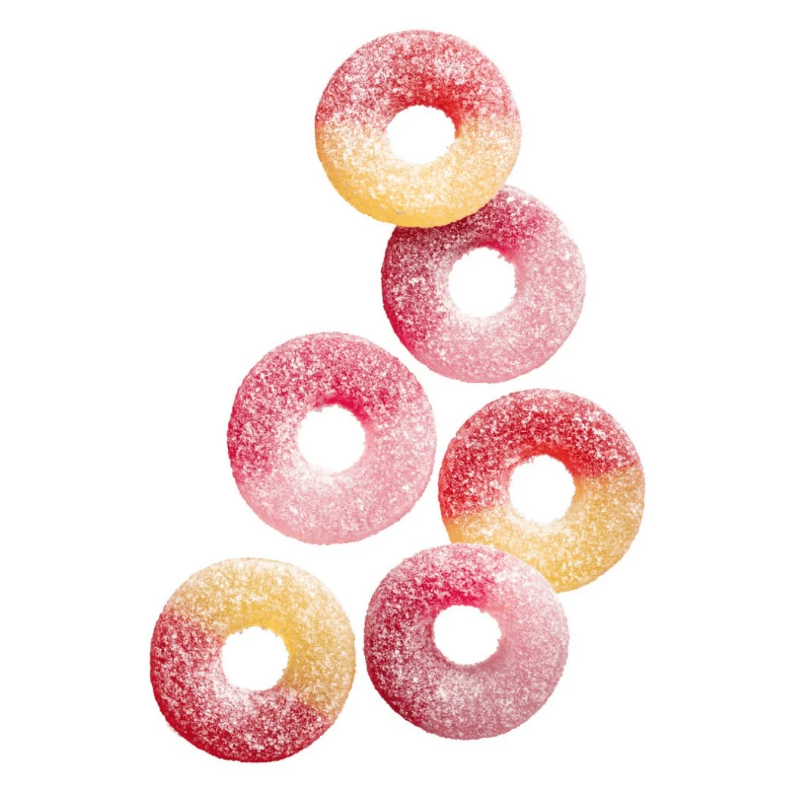

Tutti frutti ringar
_____________________________________________________________________________________________________________________________________________________________________________________________
Det är det godaste godiset som finns.
En perfekt blanding av smaker och fina färger. Samt en bra storlek,
Den är också ringformad så om du vill fria till nån och granterat få
ett ja så vet du vad du ska göra.
_____________________________________________________________________________________________________________________________________________________________________________________________
| Färg | Smak |
|---|---|
| Rosa och röd | Kiwi och melon |
| Gul och röd | Äpple och jordgubb |
| Svart | Lakrits (ewww) |
_____________________________________________________________________________________________________________________________________________________________________________________________
Mer variation
Om man har tröttnat på tutti frutti ringar(går inte egentligen) så finns det flera andra sortere av tutti frutti:
- Tuttifrutti orginal
- Tuttifrutti sour
- Tuttifrutti passion
_____________________________________________________________________________________________________________________________________________________________________________________________
Fazer
Tutti frutti ringar är gjorda av märket fazer som kommer från Finland.
